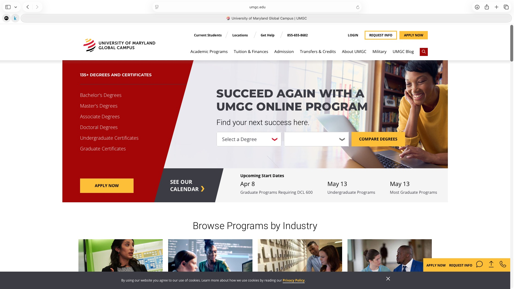
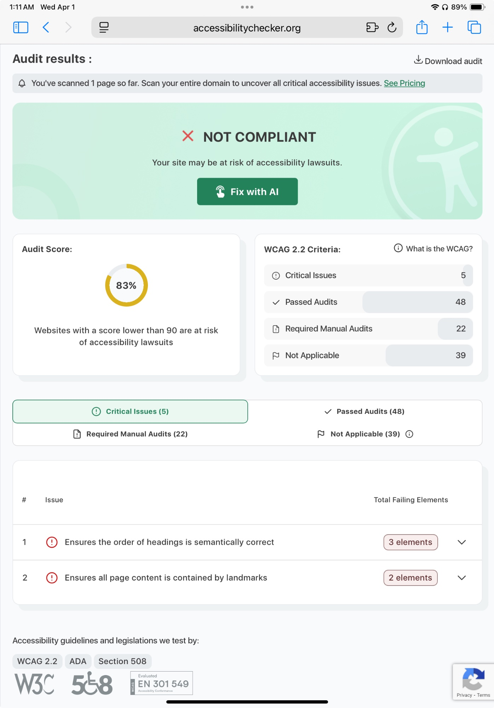

Fig. 1 — Screenshot of UMGC homepage (umgc.edu)
What is the URL of the website?
What is the name of the website?
University of Maryland Global Campus (UMGC)
Who is the site's target audience?
UMGC's primary audience is adult learners, working professionals, and military students, and online students who want flexible education.
How is the site organized?
UMGC uses a hierarchical organization. The main navigation at the top contains categories like Academic Programs, Tuition & Finances, Admission, Transfers & Credits, About UMGC, Military, and UMGC Blog. Each of the links have a dropdown with more specific pages. Everything branches out from the homepage like a tree structure.
Which CRAP Design Principles does the site use?
UMGC uses all four CRAP principles.
- Contrast: The site uses a bold red and white color scheme throughout. The yellow "Apply Now" and "Request Info" buttons stand out clearly against the white background, making the most important actions easy to spot immediately.
- Repetition: The same red color, the same font style, and the same button design are repeated consistently on every page.
- Alignment: The navigation bar, and content blocks are all cleanly aligned in a structured grid. Text and images line up neatly.
- Proximity: Related items are grouped together clearly. For example, on the homepage, the degree search dropdowns and the "Compare Degrees" button are placed right next to each other so users understand they belong to the same action.
What is the Audit Score according to the Accessibility Checker?
83% — NOT COMPLIANT — MODERATE RISK
Critical Issues: 5, Passed Audits: 48, Required Manual Audits: 22, Not Applicable: 39
Source: Accessibility Checker
The 2 critical issue categories found:
- Issue 1: Heading order is not semantically correct — 3 elements affected. Some pages skip heading levels.
- Issue 2: Not all page content is contained within landmarks — 2 elements affected. Some pages are missing main landmarks, which makes it harder for assistive technologies to navigate the page structure.

What is the site's effectiveness?
UMGC is highly effective for its main purpose. Prospective students can quickly find degree programs, check start dates, request information, and apply all from the homepage. The search tool that lets users filter by degree type and field of study is especially helpful for completing the main goal of finding the right program. The site does a good job guiding users toward the most important actions.
What is the site's efficiency?
The site is fairly efficient. The top navigation has clear labels and dropdown menus that let users jump directly to what they need without many extra clicks. Important actions like "Apply Now" and "Request Info" are always visible at the top of every page.
How is the engagement?
UMGC's website is pleasant and professional. It is appropriate for a university audience. The homepage does a good job of immediately showing upcoming start dates and program options, which keeps engaged and moving toward taking action. Overall, the experience feels organized and encouraging.
Recommendation to Improve the Website
UMGC should fix its heading order issue. The audit found that some pages skip heading levels which breaks the semantic structure of the page. This makes it difficult for screen readers to understand the hierarchy of the content and harder for blind or low mobility users to navigate efficiently. Since UMGC serves military members and students with disabilities, making sure the site works well for everyone is especially important.